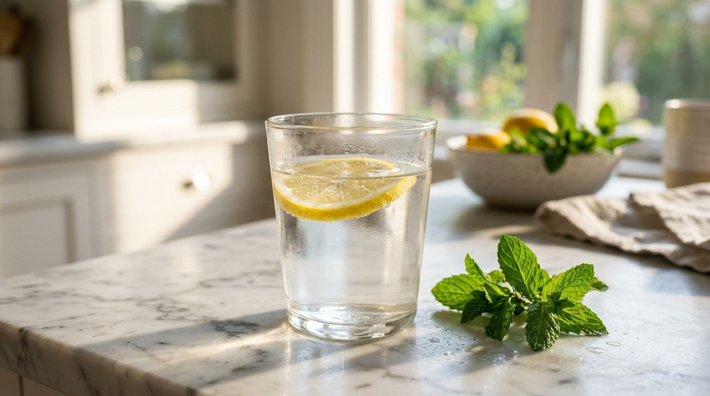
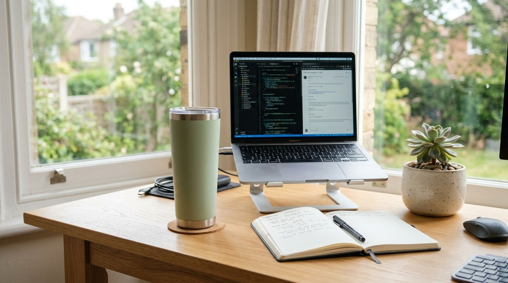
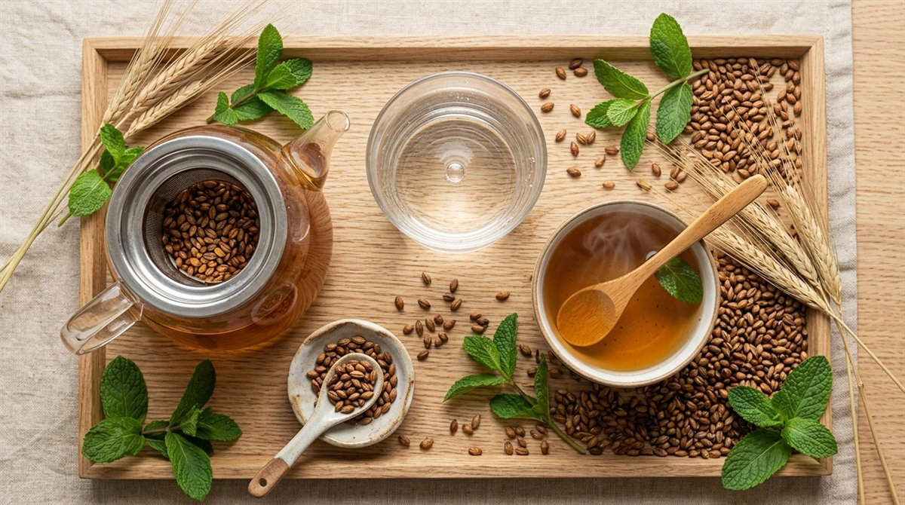
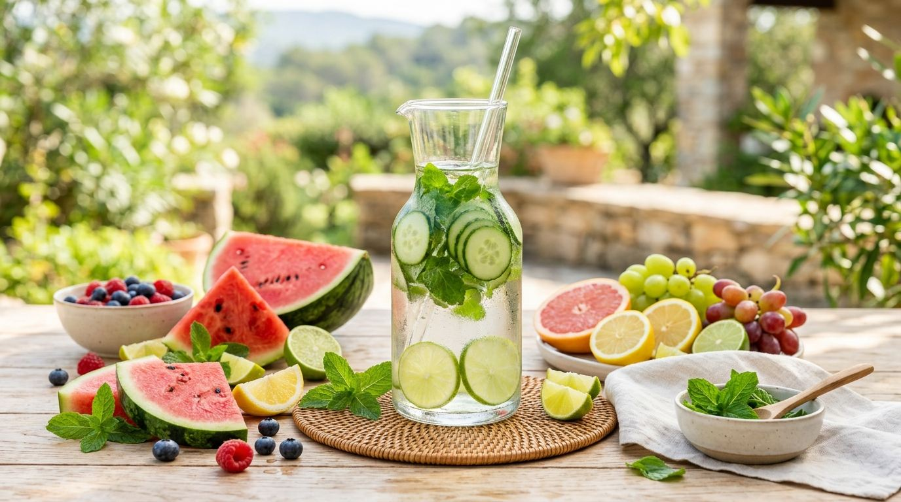

"건강해지려면 하루에 무조건 물 8잔(2리터)을 마셔야 한다"는 상식은 오랫동안 진리처럼 받아들여져 왔습니다. 하지만 이 수치는 개인의 체중, 신체 활동량, 계절, 식습관을 전혀 고려하지 않은 획일적인 오해입니다.
오히려 자신의 신장 처리 능력을 고려하지 않고 단시간에 차가운 물을 억지로 들이켜면, 혈액 속 나트륨이 급격히 희석되는 '물 중독(저나트륨혈증, Hyponatremia)'이나 소화 장애를 겪을 수 있습니다.
내 몸무게에 딱 맞춘 과학적인 일일 수분 섭취 공식부터 세포 흡수율을 200% 높이는 시간대별 음수 루틴, 차와 커피의 대체 기준 및 소변 색상 자가진단법을 완벽히 정리해 드립니다.
1. 왜 무조건 '하루 2L'를 마시면 위험할 수 있는가?
'하루 2L 물 권장량'의 유래는 1945년 미국 국립과학원(NAS) 식품영양위원회의 권고문에서 시작되었습니다.
당시 권고문에는 "성인은 하루 약 2.5L의 수분이 필요하다"고 명시되었으나, 그 바로 뒤에 적힌 "이 수분의 대부분은 우리가 매일 먹는 음식(밥, 국, 채소, 과일) 속에 이미 포함되어 있다"는 결정적인 문장이 대중 매체를 거치며 생략되었습니다.
한국인의 식단은 찌개, 국, 김치, 채소 등 수분 함량이 높은 음식이 많아 식사만으로도 하루 약 1,000ml~1,200ml의 수분을 이미 섭취합니다.
여기에 무리하게 순수 생수 2L를 더 들이부으면 하루 3.2L 이상의 과도한 수분이 유입되어 신장 기능에 심각한 과부하를 초래합니다.

2. 내 몸무게에 맞춘 정확한 일일 수분 섭취 공식
세계보건기구(WHO)와 국제 스포츠영양학회가 권장하는 가장 정확한 일일 수분 섭취량 계산법입니다.
3. 세포 흡수율을 200% 높이는 시간대별 음수 루틴
물은 마시는 총량보다 **'언제, 어떻게 나누어 마시는가'**가 체내 대사에 훨씬 결정적입니다. 한 번에 벌컥벌컥 마시면 신장을 거쳐 소변으로 바로 배출되지만, 1회 150~200ml씩 천천히 모금모금 마시면 혈관과 세포 내부로 온전히 흡수됩니다.

4. 순수 물 vs 커피·차·음료 수분 보충 비교 분석표
우리가 일상에서 마시는 음료들이 실제로 몸에 수분을 채워주는지, 아니면 오히려 빼앗아 가는지에 대한 비교 분석입니다.
| 음료 종류 | 대표 품목 | 이뇨 작용 | 수분 대체 가능 여부 |
|---|---|---|---|
| 순수 생수 | 미네랄워터 · 정수기물 | 없음 (완전 흡수) | 100% 최적 기준 |
| 곡류 차 (무카페인) | 보리차 · 현미차 · 루이보스티 | 거의 없음 (미네랄 풍부) | 생수 대용 완벽 가능 |
| 약재 차 (이뇨 유발) | 옥수수수염차 · 헛개차 · 결명자차 | 강한 이뇨 작용 | 물 대체 부적합 (약용 음용) |
| 카페인 음료 | 아메리카노 · 녹차 · 홍차 | 수분 배출 (1.5배 손실) | 마신 양만큼 물 추가 보충 필요 |
| 탄산음료 · 당류 | 콜라 · 주스 · 가당 음료 | 삼투압으로 세포 탈수 | 수분 섭취 절대 불가 |

5. 소변 색상으로 보는 수분 밸런스 5단계 체크리스트
복잡한 계산 없이 화장실에서 내 몸의 탈수 상태를 1초 만에 자가진단하는 5가지 지표입니다.
과도한 수분 섭취 상태입니다. 전해질 불균형을 막기 위해 음수량을 조금 줄이세요.
가장 이상적이고 완벽한 수분 밸런스 상태입니다. 현재 습관을 유지하세요.
경미한 탈수가 시작된 신호입니다. 즉시 미온수 1~2잔을 천천히 보충해 주세요.
심각한 만성 탈수 상태입니다. 피로와 두통이 유발되므로 충분한 수분을 공급해야 합니다.
단순 탈수가 아닌 신장·요로 결석이나 혈뇨 신호일 수 있으므로 병원 검진이 필요합니다.

자주 묻는 질문 (FAQ)
* 미국립의학한림원(NAM) Dietary Reference Intakes for Water

독자 댓글 (0)